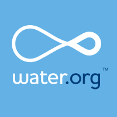
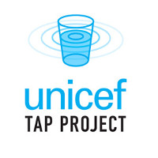
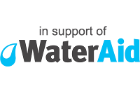
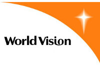

When productivity mode is ON we'll redirect your list of unproductive URL's to the donation pages of organizations that help to reduce the global burden of disease.
Unproductive URL's
Please enter a comma separated list of websites that you consider "unproductive". When productivity mode is ON we'll redirect your list of unproductive URL's to the donation pages of organizations that help to reduce the global burden of disease.
Your sites are saved automatically.
About The Extension
This extension aims to reduce the global burden of disease due to poor water quality, sanitation, and insufficient hygiene (EH-24 as identified by the US Department of Health and Human Services).




Built for the Innovating for Enviornmental Health APP Challenge